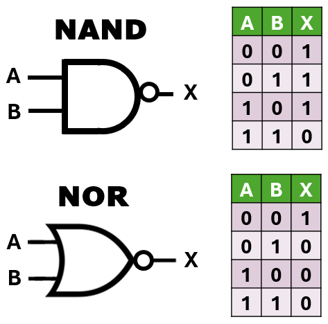
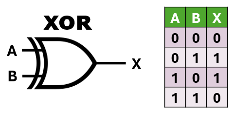
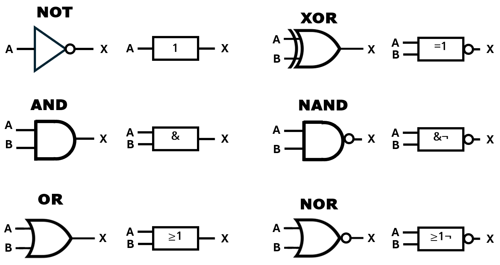
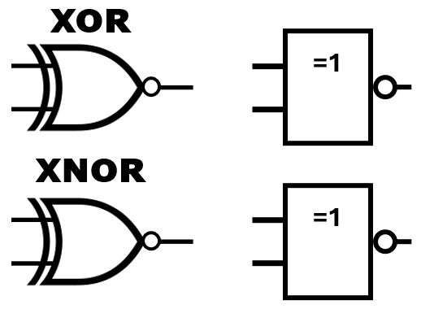
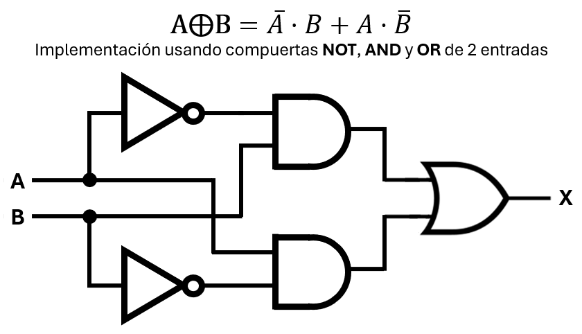
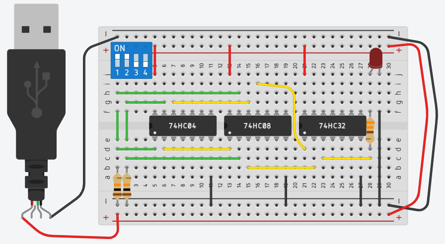
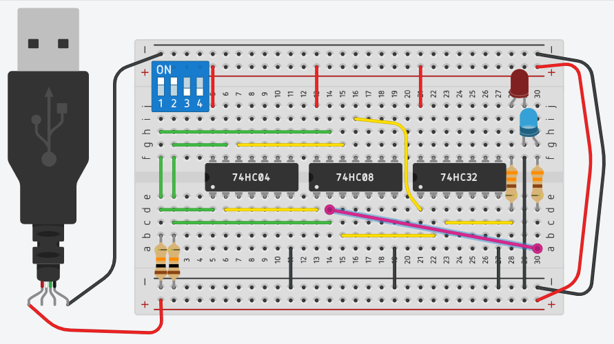
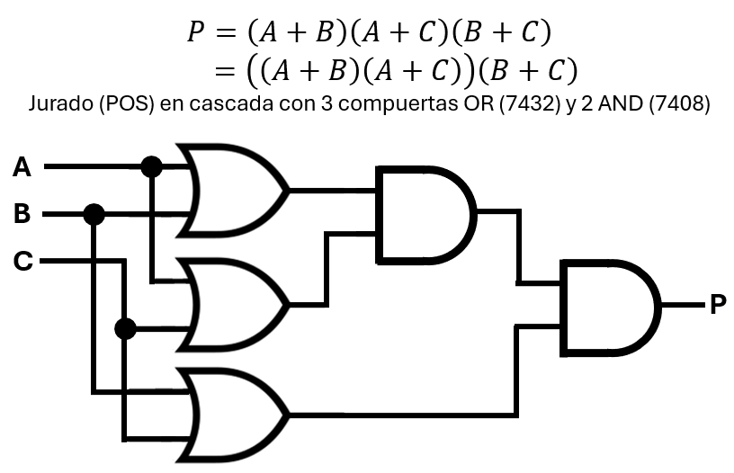
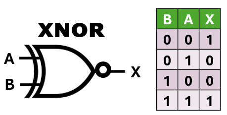

Unidad 2: Lógica Digital - Lección 18
🚀 Fuerzas Especiales: NAND, NOR, XOR y XNOR
Hasta ahora, has dominado la "Santísima Trinidad" de la lógica digital: AND, OR y NOT. Con ellas construiste el circuito del Jurado en la lección pasada. Pero el mundo real exige diseños más compactos, ingeniosos y eficientes.
Hoy conocerás a las "Fuerzas Especiales" de la electrónica, compuertas que combinan operaciones o ejecutan tareas altamente específicas:
- Las compuertas NAND y NOR: Parecen simples negaciones, pero esconden un superpoder que revolucionará la forma en que diseñas (y que explotaremos a fondo en la próxima lección).
- Las compuertas XOR y XNOR: Las "detectives" de la electrónica, expertas en comparar señales para saber si son diferentes o iguales.
Además, aprenderemos a hackear las matemáticas mirando los problemas desde "la otra cara de la moneda" con el Producto de Sumas (POS). ¡Prepárate para expandir tu arsenal de diseño!
🔄 Recordando el Jurado (L17)
En la lección 17 armamos P = AB + AC + BC usando chips 7408 y 7432 (Suma de Productos). Hoy descubriremos cómo la forma POS nos permite replantear matemáticamente este mismo problema.
💡 El Reto de la Escalera (L6)
En la Lección 6 controlaste una lámpara desde dos pisos usando interruptores mecánicos. Ese comportamiento donde la luz cambia si los interruptores son diferentes es, en realidad, una función matemática. Hoy le pondremos nombre oficial: Compuerta XOR.
1. Las Universales: NAND y NOR
Tienen una burbuja en la salida, que significa "Negación".

Fig. 1: Símbolos ANSI/IEEE y tablas de verdad de las compuertas universales NAND y NOR.
A. NAND (7400): No-Y
Es una AND negada. Matemáticamente:

Fig. 2: Diagrama de conexión interna del circuito integrado 7400. Nótese el cambio de secuencia en los pines 8, 9 y 10.
Asimetría en la distribución de pines del chip 7400
Como se observa en la imagen del diagrama interno del 7400:
- Compuertas Inferiores (1 y 2): El orden es estándar. Para la primera compuerta, las entradas son A₁ (Pin 1) y B₁ (Pin 2), con la salida en X₁ (Pin 3).
- Compuertas Superiores (3 y 4): Aquí el orden se "invierte" visualmente. Por ejemplo, en la compuerta 3, la entrada A₃ está en el Pin 9 y la entrada B₃ está en el Pin 10, mientras que su salida X₃ está en el Pin 8.
La equivalencia entre NAND/OR+NOT y NOR/AND+NOT se basa en las Leyes de De Morgan. A NAND B es lo mismo que ¬(A · B), y A NOR B equivale a ¬(A + B).
B. NOR (7402): No-O
El 7402 es un circuito integrado que contiene cuatro compuertas NOR de dos entradas. Su distribución de pines es particular, como se muestra en la figura:

Disposición de pines (vista superior):
- Compuerta 1: salida \(X_1\) en pin 1, entradas \(A_1\) en pin 2, \(B_1\) en pin 3.
- Compuerta 2: salida \(X_2\) en pin 4, entradas \(A_2\) en pin 5, \(B_2\) en pin 6.
- Compuerta 3: salida \(X_3\) en pin 10, entradas \(A_3\) en pin 8, \(B_3\) en pin 9.
- Compuerta 4: salida \(X_4\) en pin 13, entradas \(A_4\) en pin 11, \(B_4\) en pin 12.
- Alimentación: \(V_{cc}\) en pin 14, GND en pin 7.
Matemáticamente, la compuerta NOR realiza la operación:
\[ X = \overline{A + B} \]Esta distribución es importante para conectar correctamente el chip en los circuitos, especialmente cuando se utilizan las compuertas superiores (3 y 4) cuyo orden de pines está invertido visualmente respecto a las inferiores.
2. La Detectiva: XOR (7486) 🕵️
La OR Exclusiva es estricta: "O uno, o el otro, pero NO ambos". Su símbolo matemático es \(\oplus\).

Fig. 4: Símbolo ANSI/IEEE y tabla de verdad de la compuerta XOR (OR Exclusiva).
🔍 Nota sobre Símbolos: En este curso usamos el estándar ANSI/IEEE (americano), donde la XOR se representa con una curva adicional en la entrada del símbolo OR. Existe otro estándar, el IEC (europeo), donde todas las compuertas son rectángulos y la XOR se indica con un "=1" dentro. Ambos son correctos; lo importante es conocer ambos para interpretar diagramas de cualquier origen.
En este curso usamos el estándar ANSI/IEEE (símbolos con formas curvas). El estándar IEC (rectangular) es común en Europa y documentos técnicos internacionales.

Fig. 5: Símbolos lógicos ANSI/IEEE (izquierda) vs. IEC 60617-12 (derecha)
📏 Guía de Referencia: El Estándar IEC 60617
Mientras que el estándar americano (ANSI) usa formas para distinguir las compuertas, el estándar europeo e internacional (IEC) utiliza un rectángulo único donde la función se identifica por una marca interna específica.
| Compuerta | Símbolo IEC | Marca Interna | Función Lógica |
|---|---|---|---|
| AND | Rectángulo | & | Salida 1 solo si TODAS las entradas son 1 |
| OR | Rectángulo | ≥1 | Salida 1 si AL MENOS UNA entrada es 1 |
| NOT | Triángulo / Rectángulo | ◯ en salida | Invierte la entrada |
| NAND | Rectángulo | & + ◯ | Salida 0 solo si TODAS las entradas son 1 |
| NOR | Rectángulo | ≥1 + ◯ | Salida 1 solo si TODAS las entradas son 0 |
| XOR | Rectángulo | =1 | Salida 1 si las entradas son DIFERENTES |
| XNOR | Rectángulo | =1 + ◯ | Salida 1 si las entradas son IGUALES |
| Buffer | Triángulo | Sin marca | Mantiene la señal (amplificación/retardo) |
Es la convención más importante. Cualquier símbolo con un pequeño círculo en su salida (o entrada) indica una operación **NOT** aplicada. Gracias a esto, puedes transformar una AND en NAND o una OR en NOR visualmente.
El estándar IEC es altamente escalable. Para representar compuertas de 3, 4 u 8 entradas, simplemente se añaden más líneas de conexión al lado izquierdo del rectángulo, manteniendo la marca interna intacta.
🔍 Contraste de Símbolos: XOR y XNOR

Diferencia Crítica de Identificación:
Como se observa en la figura, tanto en el estándar ANSI (formas curvas) como en el IEC (rectángulos), la diferencia entre la XOR y su negación (XNOR) reside en el círculo de negación (◯).
- XOR (Exclusiva): Identificada en IEC con la marca =1 (salida activa si solo una entrada es 1).
- XNOR (Equivalencia): Se añade el círculo en la salida, indicando que el resultado de la comparación ha sido invertido.
Fig. 5.1: Análisis visual de las compuertas de comparación. Note cómo el estándar internacional IEC utiliza el operador matemático de "igualdad a 1" dentro del rectángulo.
El Secreto Matemático:
$$X = A \oplus B$$
Si expandimos esto con lógica básica, descubrimos que la XOR está hecha de:
$$X = \bar{A}B + A\bar{B}$$
Veámoslo en acción: La expresión X = A·B̄ + Ā·B no es solo teoría. Aquí tienes su implementación física usando compuertas básicas:

Fig. 6: Implementación de XOR con compuertas básicas (NOT, AND, OR).
¿Puedes calcular el valor de X cuando A = 1 y B = 0?
Sigue la señal:
- ¬B = 1, entonces primer AND = 1·1 = 1
- ¬A = 0, entonces segundo AND = 0·0 = 0
- OR final = 1 + 0 = 1 → X = 1.
¡Exactamente lo que predice la tabla de verdad de la XOR!
🍎 Rincón del Docente: Cómo explicar la ecuación \(A\bar{B} + \bar{A}B\) sin asustar
Cuando escribes \(X = \bar{A}B + A\bar{B}\) en la pizarra, la mitad de tu clase dejará de prestar atención. Es demasiado abstracta. Tu trabajo es convertir esa ecuación en una historia de la vida cotidiana donde la regla "uno sí y el otro no" sea de vida o muerte.
La Analogía del Menú Ejecutivo
Diles a tus alumnos: "Fueron a un restaurante elegante. El mesero les dice que su menú incluye el plato principal y, de postre, pueden elegir Helado (A) o Pastel (B)."
- Caso 1 (0 y 0): "No piden ni Helado ni Pastel. El mesero está triste. Salida = 0."
- Caso 2 (1 y 0): "Piden Helado (\(A\)) pero NO Pastel (\(\bar{B}\)). El mesero se los trae feliz. Salida = 1."
- Caso 3 (0 y 1): "NO piden Helado (\(\bar{A}\)) pero sí Pastel (\(B\)). El mesero se los trae feliz. Salida = 1."
- El Clímax (1 y 1): "¡Piden Helado Y Pastel al mismo tiempo! El mesero se enoja y les dice: '¡O el uno o el otro, no pueden llevarse los dos por el mismo precio!'. Salida = 0."
El anclaje matemático: Solo cuando hayan reído con la analogía, señala la ecuación en la pizarra. "Miren la primera mitad: \(A\bar{A}\). Eso es pedir Helado y rechazar el Pastel. Miren la segunda: \(\bar{A}B\). Eso es rechazar el Helado y pedir el Pastel. El signo \(+\) en medio significa que cualquiera de las dos opciones es válida. ¡Esa es toda la magia de la XOR!"
El "Paso a Paso" del Circuito: Para entender cómo funciona, hagamos el seguimiento de las señales como si fuéramos la corriente eléctrica. Desglosemos la ecuación en una tabla de verdad:
| B | A | \(\bar{A}\) (NOT Abajo) |
\(\bar{B}\) (NOT Arriba) |
\(A \cdot \bar{B}\) (AND Arriba) |
\(\bar{A} \cdot B\) (AND Abajo) |
Salida X (OR Final) |
|---|---|---|---|---|---|---|
| 0 | 0 | 1 | 1 | 0 | 0 | 0 |
| 0 | 1 | 1 | 0 | 0 | 1 | 1 |
| 1 | 0 | 0 | 1 | 1 | 0 | 1 |
| 1 | 1 | 0 | 0 | 0 | 0 | 0 |
🔬 Misión Virtual: Cazadores de Señales
Es muy fácil mirar una tabla de verdad abstracta y creerla por acto de fe. Pero un buen ingeniero audita sus circuitos. Vamos a entrar a la simulación de este "monstruo" de 3 chips y comprobaremos paso a paso que la matemática no miente.

Fig. 7: El "Monstruo" ordenado: 3 chips trabajando juntos para emular una sola compuerta XOR. Observa la entrada limpia a la izquierda y la salida (LED Rojo) a la derecha.
Para hacer esta auditoría, hemos construido nuestra propia versión de una Punta Lógica (Logic Probe). En los laboratorios profesionales, una punta lógica es un instrumento en forma de lápiz con luces que te indica instantáneamente si un pin tiene un 1 (HIGH) o un 0 (LOW), sin obligarte a leer los números de un multímetro.
Nosotros hemos fabricado una Punta Lógica Casera muy efectiva: añadimos un LED Azul con su resistencia a Tierra en la columna 30. Su cable de conexión largo (el cable rosa) será nuestra "sonda" móvil. Lo dejaremos pivotando, y moveremos la otra punta para "tocar" los diferentes pines de los chips y ver qué voltaje esconden. ¡Si el LED enciende, hay un 1; si se apaga, hay un 0!

Fig. 8: La Punta Lógica en acción. Ambas entradas están en ON. La XOR cumple su función: Salida X (LED rojo) está apagada. El cable rosa está testeando el Pin 2 del 7408 (Señal B), comprobando que efectivamente está recibiendo un 1 lógico.
🛠️ Tu Turno: Cómo auditar el circuito
En el simulador, el LED rojo final muestra el resultado de la ecuación completa \(X\). Tu misión es mover el extremo libre del cable rosa para comprobar los valores intermedios de la tabla de verdad desglosada que vimos arriba:
- Para ver \(\bar{A}\): Conecta el cable rosa al Pin 2 del 74HC04 (Columna 7). Pon el interruptor A en ON y comprueba que el LED azul se apaga.
- Para ver \(\bar{B}\): Conecta el cable rosa al Pin 4 del 74HC04 (Columna 9). Juega con el interruptor B.
- Para ver \(A \cdot \bar{B}\) (AND superior): Conecta el cable rosa al Pin 3 del 74HC08 (Columna 16). Sube A(1) y baja B(0). ¿Se enciende el azul?
- Para ver \(\bar{A} \cdot B\) (AND inferior): Conecta el cable rosa al Pin 6 del 74HC08 (Columna 19). Baja A(0) y sube B(1). ¿Se enciende el azul?
¡Acabas de usar tu primera herramienta de diagnóstico profesional para rastrear el flujo de la lógica dentro de un circuito!
🕵️♀️ El Veredicto de la Detectiva
Observa con atención la última columna de la tabla. El circuito entero (con sus 5 compuertas) se resume en una sola regla de oro:
La salida solo es 1 cuando las entradas son DIFERENTES.
Si ambas entradas son iguales (0-0 o 1-1), la salida es 0. Por eso se llama OR Exclusiva: porque excluye el caso donde ambas son verdaderas, a diferencia de la compuerta OR normal que sí lo permite.
Además de dibujar símbolos o verificar la universalidad, ahora puedes pedirle a la IA que te ayude a razonar sobre el circuito:
- Derivación de la fórmula: "Explica por qué la expresión algebraica de la XOR es X = A·B̄ + Ā·B. ¿Qué significa cada término?"
- Razón del orden del circuito: "Dado el circuito que implementa X = A·B̄ + Ā·B usando NOT, AND y OR, explica por qué se colocan las compuertas en ese orden específico (primero los NOTs, luego las ANDs, y finalmente la OR)."
- Verificación de rastreo de señales: "Calcula la salida X para A=1 y B=0 paso a paso en el circuito físico de la XOR (NOTs, ANDs, OR)."
Importante: Lee las respuestas de la IA críticamente. Compara su explicación con tu razonamiento y con lo aprendido en las lecciones anteriores sobre SOP, álgebra de Boole y flujo lógico.
🔍 Ahora, ¡tú decides! Completa la tabla de verdad del circuito calculando X para las otras tres combinaciones:
- A = 0, B = 0 → ¬B = __, ¬A = __ → Primer AND = __, Segundo AND = __ → X = __
- A = 0, B = 1 → ¬B = __, ¬A = __ → Primer AND = __, Segundo AND = __ → X = __
- A = 1, B = 1 → ¬B = __, ¬A = __ → Primer AND = __, Segundo AND = __ → X = __
Sugerencia: Usa lápiz y papel. No mires la tabla final hasta que termines.
✅ Ver respuestas
A=0, B=0 → X = 0
A=0, B=1 → X = 1
A=1, B=1 → X = 0
3. Forma Dual: Producto de Sumas (POS)
¿Por qué se llama "Forma Dual"? La SOP y la POS son dos maneras equivalentes de representar la misma función lógica, pero son como caras opuestas de la misma moneda. Mientras la SOP se enfoca en las combinaciones de entrada que activan la salida (salida = 1) usando productos (AND) y luego los une con una suma (OR), la POS se enfoca en las combinaciones que desactivan la salida (salida = 0), usando sumas (OR) y luego las une con un producto (AND). Además, las operaciones internas y externas se invierten: SOP usa (AND) internamente y (OR) externamente, mientras que POS usa (OR) internamente y (AND) externamente. Esta relación simétrica e inversa es lo que las convierte en "duales".
Notación pi (∏): Al igual que usamos ∑(m_i) para abreviar una Suma de Productos (SOP), usamos ∏(M_j) para abreviar un Producto de Sumas (POS). Los índices j corresponden a las filas donde la salida es 0 (maxterms).
Por ejemplo, para la función del jurado:
$$P(A,B,C) = \prod{(0, 1, 2, 4)}$$
Hasta ahora, hemos trabajado con la Suma de Productos (SOP), que surge de mirar las filas donde la salida es 1 en la tabla de verdad. Existe una forma dual llamada Producto de Sumas (POS), que surge de mirar las filas donde la salida es 0.
Por ejemplo, para el problema del "Jurado de Votación" (o los tres jueces), las filas donde P=0 son: (0,0,0), (0,0,1), (0,1,0), (1,0,0). Cada una de estas filas se convierte en un término de suma (OR) donde las variables que son 0 se niegan. Luego, todos estos términos se multiplican (AND).
🛡️ ¿Por qué funciona un Maxterm? (El Filtro Anti-Ceros)
En la Lección 15 aprendimos que un Minterm es un "candado" (compuerta AND) que se abre (da 1) solo con la llave correcta. Pero la forma POS usa Maxterms (compuertas OR). ¿Por qué las reglas se invierten aquí?
Recuerda la Lección 13: La compuerta OR es "la fiesta de todos". Solo da 0 (falla) cuando TODAS sus entradas son 0. ¡Cualquier 1 que entre arruina el cero!
Diseñando un Escudo Específico
Supongamos que en el Jurado, si la combinación es A=0, B=1, C=0, la propuesta se rechaza (salida 0). Queremos crear un "escudo" que atrape EXACTAMENTE esa combinación y la obligue a dar 0.
- Si conectas los cables directos a una compuerta OR gigante, entrará
0, 1, 0. El "1" del medio arruinará el cero, y la compuerta dará 1. ¡El escudo falló! - El Truco Inverso: Pones un inversor (NOT) en el cable de la \(B\). Al entrar el \(1\), el inversor lo voltea a \(0\).
- Ahora la compuerta OR recibe
0, 0, 0. ¡El escudo se activa y la salida es 0 perfecto!
Ecuación física del Maxterm: \((A + \bar{B} + C)\)
Conclusión: Un Maxterm es una trampa hecha con una compuerta OR. Tienes que negar las variables que valen 1 para convertirlas en 0, logrando que la compuerta OR reciba puros ceros únicamente en esa combinación específica. Luego, multiplicas todos los escudos (AND) para que el circuito final dé 0 si choca contra cualquiera de ellos.
Vamos a diseñar un circuito para un jurado de 3 jueces (A, B, C). La propuesta se aprueba (\(P = 1\)) si hay mayoría simple (2 o 3 votos a favor). Ahora obtendremos la expresión en forma de producto de sumas (POS) a partir de las filas donde la salida es 0.
| C | B | A | Salida (P) | Maxitérmino |
|---|---|---|---|---|
| 0 | 0 | 0 | 0 | \(A + B + C\) |
| 0 | 0 | 1 | 0 | \(\overline{A} + B + C\) |
| 0 | 1 | 0 | 0 | \(A + \overline{B} + C\) |
| 0 | 1 | 1 | 1 | – |
| 1 | 0 | 0 | 0 | \(A + B + \overline{C}\) |
| 1 | 0 | 1 | 1 | – |
| 1 | 1 | 0 | 1 | – |
| 1 | 1 | 1 | 1 | – |
Notación pi (∏) para la función del jurado:
$$P(A,B,C) = \prod{(0, 1, 2, 4)}$$
Traducción precisa: "La salida es 0 cuando el código binario de las entradas corresponde a los números de fila 0, 1, 2 o 4. Por eso multiplicamos los maxterms asociados a esas filas."
El Resultado Final en Forma POS
Observa que hemos resaltado en color amarillo las filas donde la salida es 0. Para obtener la ecuación canónica en producto de sumas, multiplicamos estos cuatro términos (cada término es una suma):
Aplicando la propiedad conmutativa podemos reescribir la ecuación canónica en orden lexicográfico:
$$P = (A + B + C)(A + B + \overline{C})(A + \overline{B} + C)(\overline{A} + B + C)$$Esta expresión es equivalente a la forma SOP obtenida anteriormente. Podemos simplificarla (con mapas de Karnaugh o álgebra de Boole) para obtener la forma mínima.
Simplificación de la expresión POS del jurado
Partimos de la expresión canónica Producto de Sumas (POS):
$$ P = (A + B + C)(A + B + \overline{C})(A + \overline{B} + C)(\overline{A} + B + C) $$Esta forma, aunque correcta, no es la más eficiente. Podemos simplificarla utilizando un mapa de Karnaugh de tres variables. Los ceros de la función (salida = 0) se encuentran en las celdas: 000, 001, 010 y 100. Al agrupar estos ceros en el mapa, obtenemos tres grupos de dos celdas cada uno:
- Grupo 1: celdas 000 y 001 (A=0, B=0, C variable) → término suma \(A + B\)
- Grupo 2: celdas 000 y 010 (A=0, C=0, B variable) → término suma \(A + C\)
- Grupo 3: celdas 000 y 100 (B=0, C=0, A variable) → término suma \(B + C\)
Multiplicando estos tres términos obtenemos la expresión POS mínima:
$$ P = (A + B)(A + C)(B + C) $$Esta representación es equivalente a la original pero utiliza solo sumas de dos variables, lo que permite una implementación más económica con compuertas lógicas.
🎯 Dos Caminos, Una Sola Verdad: Demostración de Equivalencia POS-SOP
En el diseño de sistemas digitales, la consistencia es fundamental. No importa si decidimos abordar un problema analizando los ceros de una tabla (POS) o sus unos (SOP); el comportamiento final del circuito debe ser exactamente el mismo.
A continuación, verificamos algebraicamente que la expresión POS simplificada $P = (A + B)(A + C)(B + C)$ es equivalente a la expresión SOP $P = AB + AC + BC$ obtenida anteriormente.
Esta demostración confirma que ambas formas son representaciones válidas y equivalentes del mismo sistema.
Implementación con compuertas básicas
La expresión simplificada \(P = (A+B)(A+C)(B+C)\) se implementa directamente con:
- Tres compuertas OR (de dos entradas cada una) para generar los términos suma: \(A+B\), \(A+C\), \(B+C\).
- Una compuerta AND de tres entradas (o dos AND de dos entradas en cascada) para multiplicar los tres términos.
Esta es una forma eficiente de realizar operaciones lógicas en cascada, como se muestra en la siguiente figura:

En este circuito, las compuertas OR generan los términos de suma: \(A+B\), \(A+C\) y \(B+C\). Luego, las compuertas AND combinan estos términos en cascada: primero \((A+B)(A+C)\) y finalmente se multiplica por \((B+C)\) para obtener la salida \(P\). Esta configuración utiliza:
- Tres compuertas OR de dos entradas (un chip 7432).
- Dos compuertas AND de dos entradas (un chip 7408).
📌 Distribución de pines (recordatorio)
Chip 7432 (OR):
- OR1: A1=1, B1=2, X1=3
- OR2: A2=4, B2=5, X2=6
- OR3: A3=9, B3=10, X3=8
- OR4: A4=12, B4=13, X4=11
- VCC=14, GND=7
Chip 7408 (AND):
- AND1: A1=1, B1=2, X1=3
- AND2: A2=4, B2=5, X2=6
- AND3: A3=9, B3=10, X3=8
- AND4: A4=12, B4=13, X4=11
- VCC=14, GND=7
🔨 Conexiones paso a paso
🔹 Chip 7432 (generación de las sumas)
- OR1 (término \(A + B\)):
- Entrada \(A\) al pin 1
- Entrada \(B\) al pin 2
- Salida \(S_1 = A+B\) en el pin 3
- OR2 (término \(A + C\)):
- Entrada \(A\) al pin 4
- Entrada \(C\) al pin 5
- Salida \(S_2 = A+C\) en el pin 6
- OR3 (término \(B + C\)):
- Entrada \(B\) al pin 9
- Entrada \(C\) al pin 10
- Salida \(S_3 = B+C\) en el pin 8
Nota importante: Asegúrate de que el pin 10 del 7432 reciba directamente la señal \(C\) (no la salida del OR2) para obtener el término \(B+C\) correcto. La salida del OR2 (pin 6) solo debe ir al pin 2 del 7408, como se indica a continuación.
🔹 Chip 7408 (producto de las sumas)
- AND1 (producto \((A+B)(A+C)\)):
- Entrada \(S_1\) (proveniente del pin 3 del 7432) al pin 1
- Entrada \(S_2\) (proveniente del pin 6 del 7432) al pin 2
- Salida \(T = (A+B)(A+C)\) en el pin 3
- AND2 (producto final \(T \cdot (B+C)\)):
- Entrada \(T\) (proveniente del pin 3 del 7408) al pin 4
- Entrada \(S_3\) (proveniente del pin 8 del 7432) al pin 5
- Salida final \(P\) en el pin 6
🔌 Alimentación
- Conecta \(V_{CC}\) (+5 V) al pin 14 de ambos chips.
- Conecta GND al pin 7 de ambos chips.
✅ Verificación
Completa la siguiente tabla con los valores medidos en las salidas intermedias y final:
| C | B | A | \(S_1\) | \(S_2\) | \(S_3\) | \(T\) | \(P\) |
|---|---|---|---|---|---|---|---|
| 0 | 0 | 0 | |||||
| 0 | 0 | 1 | |||||
| 0 | 1 | 0 | |||||
| 0 | 1 | 1 | |||||
| 1 | 0 | 0 | |||||
| 1 | 0 | 1 | |||||
| 1 | 1 | 0 | |||||
| 1 | 1 | 1 |
La salida \(P\) debe ser 1 solo cuando al menos dos entradas sean 1, cumpliendo la función del jurado.
Esta implementación es más eficiente que la versión canónica original y demuestra la utilidad de la simplificación lógica.
🧪 ¿Te animas a anticipar lo que viene? (Opcional)
En la Lección 19 descubriremos que la compuerta NAND es tan poderosa que con ella podemos construir cualquier función lógica, ¡incluida la del jurado! La expresión \(P = (A+B)(A+C)(B+C)\) se puede transformar aplicando De Morgan y doble negación para obtener una implementación con solo 5 compuertas NAND o 6 compuertas NOR de dos entradas para implementar el circuito de votación por mayoría (problema de los tres jueces) utilizando exclusivamente compuertas NOR, como en el chip 7402. Si ya sientes curiosidad, puedes intentar deducir cómo hacerlo; pero no te preocupes, en su momento lo veremos paso a paso. ¡Es un excelente ejercicio de intuición!
4. La Compuerta XNOR: Igualdad y Comparación

Fig. 10: Compuerta XNOR: también conocida como "igualdad". Su salida es 1 si A y B coinciden.
🔌 La compuerta XNOR (o compuerta de igualdad) es la hermana gemela de la XOR. Mientras la XOR da 1 cuando las entradas son diferentes, en la XNOR su salida es "1" (alto) solo cuando las entradas son iguales (ambas 0 o ambas 1). Observa su tabla de verdad en la figura anterior: exactamente el complemento de la XOR. Esta propiedad la hace esencial en circuitos comparadores y de paridad.
Ecuación: \(X = A \odot B\) → \(X = 1\) si \(A = B\)
🔍 Analizando la tabla
Fíjate en el patrón: \(X = \overline{A \oplus B}\). Es decir, XNOR es la negación de la XOR. En términos algebraicos: \(X = A \odot B = AB + \overline{A}\,\overline{B}\). Más adelante (en la siguiente lección) veremos cómo se comporta esta compuerta al puentear sus entradas (spoiler: ¡no lo hagas si quieres una señal variable!).
💡 ¿Cuándo usar XNOR?
La XNOR es esencial cuando quieras verificar si dos señales binarias son idénticas:
- ✅ ¿Coinciden la contraseña ingresada con la almacenada?
- ✅ ¿Están sincronizados dos relojes digitales?
- ✅ ¿Es igual el bit de paridad calculado con el recibido?
🍎 Rincón del Docente: El Juez de Igualdad en Acción
La XNOR (\(A \odot B\)) da como resultado 1 cuando las entradas son iguales. Esto suena aburrido hasta que le das un contexto de seguridad cibernética. Convierte tu salón en un banco.
Juego de Rol: "El PIN del Cajero Automático"
Dibuja una puerta de bóveda en la pizarra con una compuerta XNOR gigante. Diles: "La entrada A es la contraseña correcta que está guardada en la base de datos del banco. La entrada B es el número que el cliente acaba de teclear en el cajero."
- Si el banco espera un 1 y el cliente teclea un 1: "¡Coinciden! La compuerta XNOR da 1 (Verdadero). La bóveda se abre."
- Si el banco espera un 0 y el cliente teclea un 0: "¡También coinciden! La compuerta XNOR da 1 (Verdadero). La bóveda se abre."
- El Intento de Robo (1 y 0): "Si el banco espera un 1 pero el ladrón teclea un 0... la compuerta ve que son diferentes. Da 0 (Falso). ¡Suena la alarma policial!"
El anclaje pedagógico: Enséñales que en el mundo real, los ingenieros conectan cientos de compuertas XNOR en paralelo para comparar contraseñas de 64 bits de un solo golpe. Si TODAS las XNOR dan 1, la contraseña es correcta. Acabas de enseñarles el principio básico de los "Comparadores de Magnitud" que verán en la universidad.
5. Catálogo de Referencia
| Nombre | Chip | Función Lógica |
|---|---|---|
| Buffer (Seguidor) | 7407 | Identidad (Salida = Entrada). Amplifica y da retardo. |
| NOT | 7404 | Inversor. Invierte el estado. |
| AND | 7408 | Multiplicación. Todo en 1 para salir 1. |
| OR | 7432 | Suma. Con un 1 basta para salir 1. |
| NAND | 7400 | Universal. AND negada. |
| NOR | 7402 | Universal. OR negada. |
| XOR | 7486 | Exclusiva. Salida 1 si son diferentes. |
| XNOR | 74266 | Igualdad. Salida 1 si son iguales. |
🕵️♂️ El "Chip Fantasma" revelado: Aunque es la primera vez que ves el chip 7407 en el catálogo, su función ya ha aparecido "disfrazada" en el curso:
- En la Lección 17: Cuando mencionamos que una salida solo puede alimentar a 10 compuertas (Fan-out). El Buffer es la solución física para inyectar corriente y superar ese límite.
- En la Lección 22: Cuando hablemos del Retardo de Propagación. A veces los ingenieros ponen un Buffer solo para "hacer tiempo" y que dos señales lleguen sincronizadas a una meta.
- Anticipo de la Lección 24: Pronto demostraremos algebraicamente la Ley de Involución (\(\overline{\overline{A}} = A\)). En la protoboard, conectar dos inversores NOT en serie es, físicamente, construir un Buffer.
"El Buffer no cambia la lógica, pero fortalece la realidad física del circuito."
⚠️ Nota sobre Disponibilidad
El chip 74266 (XNOR) es menos común que el 7486 (XOR). En la práctica, muchos ingenieros construyen XNOR usando:
- Un XOR + un NOT (7486 + 7404)
- O aplicando De Morgan con NAND/NOR (Lección 14)
¡Otra razón para dominar las reglas de simplificación!
🎓 Para tu futura aula: Enseñando Universalidad a grado 10°
Imagina que estás preparando una clase para estudiantes de grado 10° que ya conocen AND, OR, NOT, SOP y Karnaugh.
- ¿Cómo les explicarías el concepto de "compuerta universal"? (Ej: "Es como una pieza de Lego que puede imitar a cualquier otra pieza si la combinas bien").
- ¿Qué analogía usarías para la lógica inversa de NAND/NOR? (Ej: "NAND es como preguntar '¿No son A y B verdaderas?'").
- ¿Cómo harías una demostración visual de cómo una NAND puede actuar como una NOT?
Anota tu estrategia en tu cuaderno. Recuerda: haz que ellos experimenten o razonen, no solo escuchen.
🎧 Podcast: Conversación entre Expertos
Dos docentes analizan las compuertas universales (NAND, NOR) y las compuertas de comparación (XOR, XNOR), exploran su relación con las Leyes de De Morgan y discuten estrategias para enseñar estos conceptos a estudiantes de grado 10°. Además, presentan los problemas desde "la otra cara de la moneda" con el Producto de Sumas (POS).
❓ Preguntas de Consolidación
Responde estas preguntas para asegurarte de que dominas los conceptos técnicos y estás listo para enseñarlos en tu futura aula:
1. Explica la diferencia fundamental entre el método SOP (Suma de Productos) y el método POS (Producto de Sumas) al analizar una tabla de verdad.
Explicación técnica:
- SOP (Suma de Productos): Se enfoca en los Unos (1) de la salida. Genera minterms (multiplicaciones) donde las variables en 0 se niegan. Luego, todos los minterms se suman (OR). Se usa la notación \(\sum m\).
- POS (Producto de Sumas): Se enfoca en los Ceros (0) de la salida. Genera maxterms (sumas) donde las variables en 1 se niegan. Luego, todas las sumas se multiplican (AND). Se usa la notación \(\prod M\).
Para tu futura aula: "SOP es como hacer una lista de las razones por las que SÍ deberíamos salir a jugar y sumarlas. POS es hacer una lista de las razones por las que NO deberíamos salir, y asegurarnos de evitar cada una de ellas. Son dos formas distintas de llegar a la misma decisión."
2. ¿Por qué llamamos a la XOR la "Detectiva de Diferencias" y a la XNOR el "Juez de Igualdad"? Da un ejemplo práctico de cada una.
Explicación técnica: La XOR (\(A \oplus B\)) solo emite un 1 lógico cuando sus entradas son diferentes (0-1 o 1-0); literalmente detecta si hay una diferencia entre los bits. La XNOR (\(A \odot B\)), al ser su complemento, solo emite un 1 cuando las entradas coinciden exactamente (0-0 o 1-1).
Ejemplos prácticos:
- XOR: Control de luces en una escalera. Si la posición de los interruptores es diferente, la luz cambia de estado.
- XNOR: Validación de contraseñas o pines en una caja fuerte. Si el bit ingresado es igual al bit guardado en memoria, el sistema da "acceso permitido" (1).
3. Un estudiante conecta el pin 8 y 9 de un chip 7400 a sus interruptores, esperando ver la salida en el pin 10, pero el circuito no funciona. ¿Qué error de "lectura de planos" cometió?
Explicación técnica: El estudiante asumió que todas las compuertas del chip 7400 siguen el mismo orden secuencial (Entrada-Entrada-Salida). Sin embargo, por diseño interno, las compuertas superiores (3 y 4) del 7400 tienen un patillaje asimétrico: el Pin 8 es la Salida, mientras que los Pines 9 y 10 son las Entradas. Al conectar sus interruptores a la salida y a una entrada, causó un conflicto eléctrico.
Reflexión docente: Este es el momento perfecto para enseñar que en ingeniería "suponer es la madre de todos los errores". Siempre se debe consultar el Datasheet (hoja de datos) o el diagrama de pines oficial antes de cablear.
4. Matemáticamente, la XOR se define como \(X = \bar{A}B + A\bar{B}\). Traduce esta ecuación a palabras simples como si se la estuvieras explicando a un estudiante de secundaria.
Traducción a lenguaje común:
"Para que la salida sea verdadera (1), tiene que cumplirse estrictamente una de dos condiciones, pero nunca ambas a la vez:"
- O bien la primera condición es falsa (\(\bar{A}\)) Y la segunda es verdadera (\(B\)).
- O bien la primera condición es verdadera (\(A\)) Y la segunda es falsa (\(\bar{B}\)).
Ejemplo: "Solo te doy el premio si lavas los platos pero NO barres, O si barres pero NO lavas los platos. Si haces las dos cosas o no haces ninguna, ¡no hay premio!"
5. ¿Por qué un ingeniero decidiría usar el método POS en lugar del SOP para resolver un problema, si ambos dan el mismo resultado?
Explicación técnica: Todo se reduce a la eficiencia y el costo. Un ingeniero elige el método basándose en la tabla de verdad:
- Si la tabla de verdad tiene muy pocos unos (1) y muchos ceros (0), es más rápido y barato usar SOP (menos minterms que sumar).
- Si la tabla de verdad tiene muy pocos ceros (0) y muchísimos unos (1), es mucho más corto agrupar los ceros usando POS.
Para tu futura aula: "Un buen ingeniero es un profesional perezoso pero inteligente. Mira la tabla y se pregunta: ¿hay menos ceros o menos unos? Elige el camino que requiera escribir (y comprar) menos compuertas."
📋 Bitácora de Innovación (Mi Cuaderno)
Responde en tu cuaderno físico (o aquí) las siguientes preguntas:
- ¿Por qué se llama a la XOR la compuerta de la "diferencia" y a la XNOR la de la "igualdad"?
- ¿Qué es el Producto de Sumas (POS) y cómo se diferencia de la Suma de Productos (SOP)?
- Describe con tus palabras por qué la ecuación \(X = A \cdot \bar{B} + \bar{A} \cdot B\) genera el comportamiento exacto de una XOR.
- ¿Cómo podrías desafiar a un estudiante de grado 10° a deducir el comportamiento de una XNOR si solo conoce la XOR y la NOT?
🚀 Próximamente...
Ya conoces a todas las "Fuerzas Especiales" (NAND, NOR, XOR, XNOR) y la forma POS. Pero aquí hay un secreto de la industria: los ingenieros rara vez compran chips AND, OR y NOT por separado. Prefieren comprar cajas llenas de compuertas NAND y NOR, y usarlas para todo.
¿Cómo es posible que un solo tipo de compuerta reemplace a todas las demás? En la próxima lección (Lección 19), descubriremos el arte del 'puenteo' y la verdadera magia de la Universalidad.
Aprenderás a construir el mundo entero usando un solo tipo de "bloque de Lego", y rediseñarás el circuito del Jurado para que sea infinitamente más barato de fabricar. ¡Prepárate para pensar y optimizar como un verdadero arquitecto de hardware!
🧠 Cerebro de Silicio: La XOR y el Nacimiento de la IA Moderna
Para Grado 7°: El Juego de las Diferencias
Una IA que reconoce objetos usa millones de "mini-XORs". Por ejemplo, para saber si una foto es un perro o un gato, la IA compara los píxeles de la imagen con lo que ya conoce. Si hay muchas diferencias (XOR = 1), la IA sabe que no es el mismo objeto. ¡La XOR es el ojo crítico de la tecnología!
Para Grado 10°: El Problema que Paralizó la IA
En 1969, se demostró que una sola neurona artificial no podía resolver la lógica XOR. A diferencia de la AND u OR, la XOR no se puede dividir con una línea recta en un mapa. Este descubrimiento detuvo la investigación en IA por 15 años, hasta que aprendimos que necesitábamos "capas" de neuronas para entender la exclusividad. ¡Hoy estás aprendiendo el concepto que forzó la creación de las Redes Neuronales Profundas!
🚀 Conexión Futura: En la Lección 26, usaremos la XOR para crear "bits de paridad". Es la forma en que la IA de un carro autónomo se asegura de que sus frenos no se activen por culpa de un simple ruido eléctrico.